관광통역안내사-1교시 (2022-08-20 기출문제)
1과목: 한국사
1. 신석기 시대에 관한 설명으로 옳은 것을 모두 고른 것은?
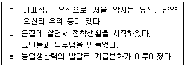
- ㄱ, ㄴ
- ㄱ, ㄹ
- ㄴ, ㄷ
- ㄷ, ㄹ
(정답률: 알수없음)

2. 청동기 시대에 관한 설명으로 옳은 것은?
- 거친무늬 거울을 만들었다.
- 주로 동굴이나 막집에서 살았다.
- 빗살무늬 토기에 음식을 저장하였다.
- 소를 이용하여 땅을 갈고 농사를 지었다.
(정답률: 알수없음)
3. 다음 습속을 가진 나라에 관한 설명으로 옳은 것은?
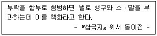
- 무천이라는 제천행사를 지냈다.
- 민며느리제라는 풍속이 있었다.
- 제가회의에서 국가의 중대사를 결정하였다.
- 제사장인 천군과 신성 지역인 소도가 있었다.
(정답률: 알수없음)
4. 고구려에서 제작된 문화유산으로 옳지 않은 것은?
- 호우총 출토 호우명 청동그릇
- 금동 연가 7년명 여래 입상
- 강서대묘 사신도
- 사택지적비
(정답률: 알수없음)
5. 고구려 소수림왕의 업적으로 옳지 않은 것은?
- 불교 수용
- 태학 설립
- 녹읍 지급
- 율령 반포
(정답률: 알수없음)
6. 신라 골품제에 관한 설명으로 옳지 않은 것은?
- 혈연에 따른 폐쇄적인 신분제도였다.
- 관등의 상한선이 골품에 따라 정해져 있었다.
- 골품은 가옥 규모나 수레 종류 등을 규제하였다.
- 왕은 진골에서 나왔고, 중앙 관서의 장관은 6두품이 맡았다.
(정답률: 알수없음)
7. 발해의 통치 제도에 관한 설명으로 옳지 않은 것은?
- 당의 3성 6부제를 수용하여 정치 제도를 마련하였다.
- 전국을 5경 15부 62주로 나누어 다스렸다.
- 정당성의 대내상이 국정을 총괄하였다.
- 감찰사라는 감찰 기구를 두었다.
(정답률: 알수없음)
8. 통일신라 토지 제도에 관한 설명으로 옳은 것은?
- 관리를 18품으로 나누어 전지와 시지를 지급하였다.
- 하급 관리에게 구분전을 지급하였다.
- 공신에게 역분전을 지급하였다.
- 백성에게 정전을 지급하였다.
(정답률: 알수없음)
9. 통일신라 말기 6두품 출신 학자가 아닌 것은?
- 최충
- 최치원
- 최승우
- 최언위
(정답률: 알수없음)
10. 고려시대 주요 승려들의 활동 시기가 앞선 순으로 옳게 나열한 것은?
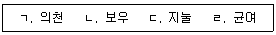
- ㄱ → ㄴ → ㄷ → ㄹ
- ㄱ → ㄹ → ㄷ → ㄴ
- ㄹ → ㄱ → ㄷ → ㄴ
- ㄹ → ㄴ → ㄱ → ㄷ
(정답률: 알수없음)
11. 고려시대 성종의 업적으로 옳은 것은?
- 정계와 계백료서를 남겼다.
- 독자적인 연호를 사용하였다.
- 쌍기의 건의로 과거제를 시행하였다.
- 지방에 12목을 설치하고 지방관을 파견하였다.
(정답률: 알수없음)
12. 고려의 대외 관계 중 거란과 관련이 있는 사건으로 옳지 않은 것은?
- 서희가 외교 담판을 벌여 강동 6주를 확보하였다.
- 윤관이 동북 9성을 쌓고 군대를 주둔시켰다.
- 개경이 함락되어 현종이 나주로 피란하였다.
- 강감찬이 귀주에서 승리를 거두었다.
(정답률: 알수없음)
13. 조선시대 정치 기구에 관한 설명으로 옳지 않은 것은?
- 사헌부는 관리의 비리를 감찰하였다.
- 삼사는 회계와 출납의 업무를 맡았다.
- 한성부는 수도의 치안과 행정을 관장하였다.
- 춘추관은 역사서의 편찬과 보관을 담당하였다.
(정답률: 알수없음)
14. 조선시대 과거 제도에 관한 설명으로 옳은 것을 모두 고른 것은?
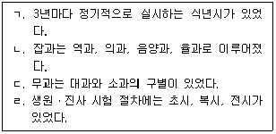
- ㄱ, ㄴ
- ㄱ, ㄹ
- ㄴ, ㄷ
- ㄷ, ㄹ
(정답률: 알수없음)
15. 조선 태종 대의 역사적 사실로 옳은 것은?
- 동국문헌비고를 편찬하였다.
- 칠정산 내외편을 편찬하였다.
- 혼일강리역대국도지도를 제작하였다.
- 기기도설을 참고하여 배다리를 제작하였다.
(정답률: 알수없음)
16. 다음에서 설명하는 작품은?
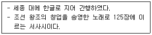
- 동문선
- 용비어천가
- 동명왕편
- 월인천강지곡
(정답률: 알수없음)
17. 조선 전기에 편찬된 서적으로 옳은 것은?
- 임원경제지
- 청장관전서
- 동국여지승람
- 오주연문장전산고
(정답률: 알수없음)
18. 조선 후기 경제상에 관한 설명으로 옳은 것을 모두 고른 것은?
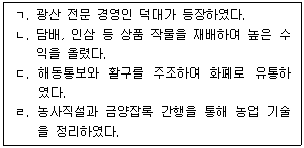
- ㄱ, ㄴ
- ㄱ, ㄹ
- ㄴ, ㄷ
- ㄷ, ㄹ
(정답률: 알수없음)
19. 조선시대 서원에 관한 설명으로 옳지 않은 것은?
- 향음주례를 행하였다.
- 주세붕이 세운 백운동 서원이 시초이다.
- 입학 자격은 생원시와 진사시 합격자를 대상으로 하였다.
- 사액서원은 국가로부터 서적, 노비, 토지 등을 지급받았다.
(정답률: 알수없음)
20. 조선 후기 사회상에 관한 설명으로 옳지 않은 것은?
- 대동법 실시로 공인층이 형성되었다.
- 생활 공간을 장식하는 민화가 유행하였다.
- 공명첩, 납속책 등으로 신분제가 동요되었다.
- 자동시보장치가 된 물시계로 자격루를 제작하였다.
(정답률: 알수없음)
21. 다음 내용과 관련된 인물은?
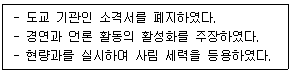
- 길재
- 김종직
- 조광조
- 송시열
(정답률: 알수없음)
22. 조선시대 균역법을 시행한 국왕은?
- 태종
- 숙종
- 영조
- 정조
(정답률: 알수없음)
23. 흥선 대원군이 시행한 정책으로 옳지 않은 것은?
- 환곡의 폐단을 막기 위해 사창제를 실시하였다.
- 혜상공국을 혁파하고 지조법을 개혁하였다.
- 대전회통을 편찬하여 통치 규범을 정비하였다.
- 양반에게도 군포를 징수하는 호포제를 실시하였다.
(정답률: 알수없음)
24. 다음에서 설명하는 단체는?
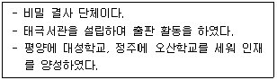
- 신간회
- 신민회
- 대한자강회
- 헌정연구회
(정답률: 알수없음)
25. 다음 사건을 발생시기가 앞선 순으로 옳게 나열한 것은?
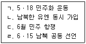
- ㄱ → ㄴ → ㄹ → ㄷ
- ㄱ → ㄷ → ㄴ → ㄹ
- ㄴ → ㄱ → ㄷ → ㄹ
- ㄴ → ㄱ → ㄹ → ㄷ
(정답률: 알수없음)
2과목: 관광자원해설
26. 관광자원의 개념적 특성으로 옳지 않은 것은?
- 매력성과 유인성
- 유한성과 보존성
- 이동성과 소모성
- 다양성과 복합성
(정답률: 알수없음)
27. 관광자원해설 기법 중 인적서비스기법이 아닌 것은?
- 담화
- 재현
- 자기안내
- 동행
(정답률: 알수없음)
28. 호수와 지명의 연결로 옳은 것은?
- 화진포 - 강원도 고성군
- 송지호 - 강원도 원주시
- 경포호 - 강원도 속초시
- 영랑호 - 강원도 춘천시
(정답률: 알수없음)
29. 동굴관광자원 중 용암동굴이 아닌 것은?
- 고수굴
- 김녕굴
- 만장굴
- 협재굴
(정답률: 알수없음)
30. 강원도 지역에 있는 국립공원에 해당하는 것을 모두 고른 것은?
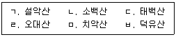
- ㄱ, ㄴ, ㄷ, ㄹ
- ㄱ, ㄷ, ㄹ, ㅁ
- ㄴ, ㄷ, ㅁ, ㅂ
- ㄴ, ㄹ, ㅁ, ㅂ
(정답률: 알수없음)
31. 우리나라 최초로 지정된 도립공원은?
- 마이산 도립공원
- 금오산 도립공원
- 팔공산 도립공원
- 선운산 도립공원
(정답률: 알수없음)
32. 농촌관광의 경제적 기대효과가 아닌 것은?
- 농촌 지역경제의 활성화
- 농촌 지역주민의 소득증대
- 유휴자원의 소득자원화
- 농촌과 도시와의 상호교류 촉진
(정답률: 알수없음)
33. 지역과 특산물의 연결로 옳지 않은 것은?
- 담양 – 죽세공품
- 안동 – 한천
- 강화 – 화문석
- 금산 - 인삼
(정답률: 알수없음)
34. 북한 지역에 위치한 관동 8경은?
- 삼척의 죽서루
- 평해의 월송정
- 양양의 낙산사
- 고성의 삼일포
(정답률: 알수없음)
35. 지역과 축제명의 연결로 옳은 것은?
- 양양 – 산천어축제
- 진도 – 영등제
- 무주 – 빙어축제
- 안동 - 머드축제
(정답률: 알수없음)
36. 유네스코 세계문화유산에 등재된 민속마을은?
- 안동 하회마을
- 북촌 한옥마을
- 전주 한옥마을
- 한국 민속촌
(정답률: 알수없음)
37. 카지노에 관한 설명으로 옳은 것은?
- 호텔업에 대한 의존도가 낮다.
- 강원랜드는 외국인만 출입 가능하다.
- 주변국가의 정치ㆍ경제ㆍ사회 등의 영향을 받지 않는다.
- 외화획득이 높은 서비스 산업이다.
(정답률: 알수없음)
38. 다목적댐에 해당하는 것은?
- 평화의 댐
- 수어댐
- 광동댐
- 임하댐
(정답률: 알수없음)
39. 다음 설명에 해당하는 것은?
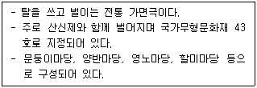
- 양주별산대놀이
- 처용무
- 남사당놀이
- 수영야류
(정답률: 알수없음)
40. 유네스코 등재 인류무형문화유산이 아닌 것은?
- 택견
- 줄타기
- 은산별신제
- 영산재
(정답률: 알수없음)
41. 한국의 전통 지붕에 관한 설명으로 옳은 것은?
- 모임지붕은 책을 엎어 놓은 것과 같은 형태로 고려 이전에 주로 사용되었다.
- 맞배지붕은 지붕면이 4면으로 되어있어 숭례문과 같은 도성의 문에 사용되었다.
- 우진각지붕은 하나의 꼭짓점에서 지붕골이 만나는 형태이다.
- 팔작지붕은 경복궁 근정전, 부석사 무량수전과 같이 권위적인 건축에 많이 사용되었다.
(정답률: 알수없음)
42. 경복궁 내 건축물이 아닌 것은?
- 인정전
- 자경전
- 사정전
- 강녕전
(정답률: 알수없음)
43. 불교의 수인에 관한 설명으로 옳지 않은 것은?
- 지권인은 진리는 하나라는 것을 의미한다.
- 전법륜인은 두려움을 없애주고 평정을 주는 힘을 가진다는 것을 의미한다.
- 선정인은 참선할 때 짓는 수인이다.
- 항마촉지인은 깨달음을 얻는 모습을 형상화한 것이다.
(정답률: 알수없음)
44. 불교 사찰의 입구에 있는 문으로 기둥이 일렬로 서있다는 뜻을 가진 문은?
- 천왕문
- 일주문
- 금강문
- 해탈문
(정답률: 알수없음)
45. 다음의 석탑 중 국보로 지정된 가장 오래된 석탑은?
- 미륵사지석탑
- 불국사 다보탑
- 원각사지 십층석탑
- 월정사 팔각구층석탑
(정답률: 알수없음)
46. 다음 설명에 해당하는 서원은?
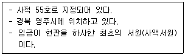
- 필암서원
- 도동서원
- 소수서원
- 도산서원
(정답률: 알수없음)
47. 다음 설명에 해당하는 민요는?
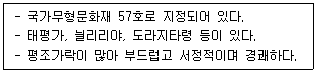
- 경기민요
- 남도민요
- 동부민요
- 서도민요
(정답률: 알수없음)
48. 백자의 종류 중 진사백자에 관한 설명으로 옳은 것은?
- 코발트계 청색 안료로 그림을 그리고 구워낸 백자이다.
- 표면에 음각으로 문양을 새기고 자토로 메워 검은색으로 나타낸 백자이다.
- 철분 안료로 문양을 그려 다갈색으로 나타낸 백자이다.
- 산화동으로 문양을 그려 붉은색으로 나타낸 백자이다.
(정답률: 알수없음)
49. 두견주에 관한 설명으로 옳은 것은?
- 지방무형문화재로 지정되어 있다.
- 경주 최씨 문중에서 전승되어 온 청주이다.
- 충남 면천지역에서 전승되어 온 진달래향의 청주이다.
- 함경도 토속주로 문배나무 과일향이 나는 특징이 있다.
(정답률: 알수없음)
50. 조선의 왕릉 중 서삼릉이 아닌 것은?
- 희릉
- 예릉
- 익릉
- 효릉
(정답률: 알수없음)
- ㄴ: 신석기 시대는 돌로 된 도구를 사용하는 시대로, 인류가 처음으로 도구를 만들어 사용하기 시작한 시기이다.